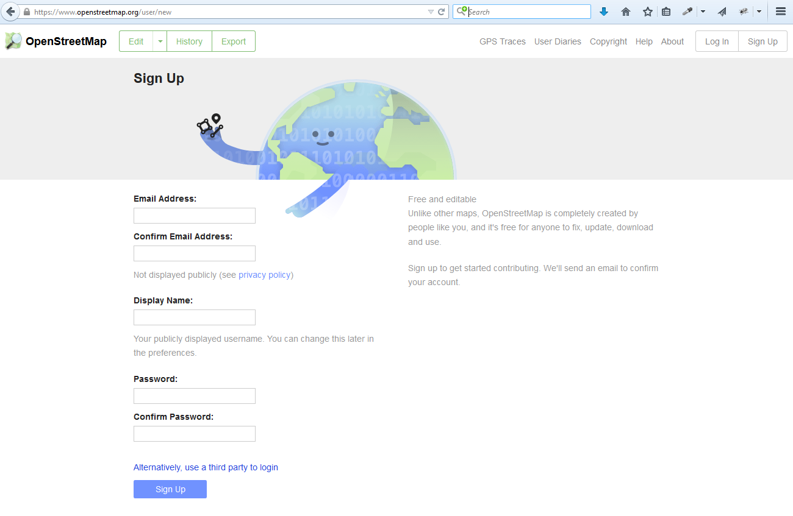

follow along here:
grant-humphries.github.io/presentations/intro-to-osm/index.html
 introduction
introduction-to-
openstreetmap.
 wikipedia of maps
wikipedia of maps.
anyone can contribute.
anyone can use the data.
there is no contributor hierarchy.
data model -->.
nodes, ways & relations
all data types are stored together within native osm format.
attributes are called tags -->.
tags are
key:value
pairs.
diagram comparing attribute table for desktop gis to tags in osm editors
tagging standards
(and help for all things osm) @ the
osm wiki.
osm can be rendered infinitely many ways -->.
getting started with editing -->.

create an
osm account @
osm.org
editors -->.
iD -->.
launch straight from browser @ osm.org.
user friendly.
josm -->.
requires java.
more powerful.
data sources -->.
data license:
ODbL
(open database license).
* attribute
* share alike
* keep open.
but it can get complicated.
bottom line:
if you're unsure of whether you can derive
from a given data source don't do it.
what not to use -->.
proprietary data products
(like stuff from google).
what to use -->.
your knowledge.
data you've collected -->.
gps tracks.
field papers.
sanctioned
aerial imagery
(like bing).
(census bureau)
tiger roads tms overlays.
include image of TIGER Census logo,
make joke about how it is crap --haha
mapillary.
there are plugins for id & josm
what to map -->.
poi's.
building footprints.
service roads.
map roulette.
uploading your changes -->.
your edits alter osm only
once they've been uploaded.
the editor is your sandbox until you push
commit messages are important.
good ones serve as valuable metadata.
comment +
data sources.

using the data -->.
qgis reads geojson...
...and will export to any geofile format
that you'd like (ogr2ogr!).
uses at trimet -->.
map data for navigation system on LIFT buses
(paratransit service).
questions?
contact:
grant.humphries@gmail.com
github:
github.com/grant-humphries
(presentation made with big by @tmcw)